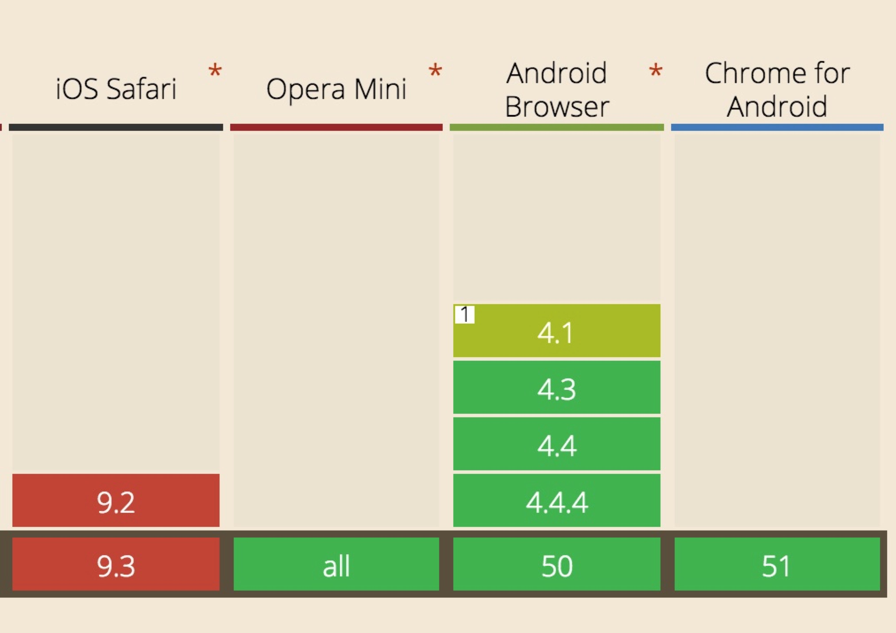

本文属于“好奇心日报app的流量和文章打开速度优化”系列文章第一篇，主要介绍基于图片压缩的流量优化。
流量优化对于一个app来讲意义非常重大，能节约用户的流量，节约用户的存储空间，而且能有提高网络请求的回包速度，提高app的速度。因此流量优化历来都是app的优化重点，而且是一个持续优化的点。QDaily是一个多图片的新闻类应用，采编喜欢上传gif图来提高内容的表现力，这也使得流量消耗非常大。粗略估计，用户在浏览完第一页所有新闻（共48篇），会消耗流量达100m，其中98m为图片，这里值得优化的空间非常大。
针对这种情况，我们先后使用的优化包含：wifi条件下预载所有文章、图片和js、css数据；重用所有已经下载的js、css和图片的缓存；后台图片的压缩以及客户端图片的WebP化。
其中，后台压缩和WebP化依赖第三方多媒体处理服务器，已知比较好的国内服务有腾讯优图和七牛。这里我们采用的七牛的服务，以下很多具体的调用都是基于七牛的。
我们的后台通过七牛的图片压缩（包含质量和分辨率），我们将首页流量由100m减少到了80m，依然有极大的提升空间。因此客户端采用基于WebP的流量压缩方案，将流量由80m压缩到了20m，减少了75%！相对于最初的处理，流量减少了80%！（android大多数机型支持WebP animated，压缩能达到80%，但iOS的压缩率取决于首页中gif图的个数和大小，测试大概优化在60%-80%之间）
下面就介绍下这个效果极好的WebP的流量解决方案。
一、WebP的介绍
1、什么是 WebP
WebP (发音 weppy )，是一种同时提供了有损压缩与无损压缩的图片文件格式，是Google新推出的影像技术，它可让网页图档有效进行压缩，同时又不影响图片格式兼容与实际清晰度，进而让整体网页下载速度加快。
- WebP 无损压缩的图片可以比同样大小的 PNG 小 26%；
- WebP 有损压缩的图片可以比同样大小的 JPEG 小 25-34%；
- WebP 支持无损的透明图层通道，代价只需增加 22% 的字节存储空间；
- WebP 有损透明图像可以比同样大小的 PNG 图像小3倍。
2、手机端支持情况
- WebP在手机端浏览器的支持情况（WebView & UIWebView）

- Native
Android在4.0以上Image直接支持对WebP的解码。iOS可以通过google提供的WebP解析库来实现UIImageView中显示WebP。
QDaily不支持4.0以下手机（现在估计也没啥支持的了吧。。。），所以下面的功能并没有测试，无脑搬运：
Android 4.0 以下 WebP 解析库（链接）
iOS WebP 解析库（链接）
3、WebP工具在Mac Os下的安装（本地编解码）
- 方式一（推荐）：使用Homebrew
1.安装Homebrew。参考网页http://brew.sh/index_zh-cn.html
2.安装完成后，用如下命令安装libwebp。
brew install webp
- 方式二：使用MacPorts安装
1.到此网站链接下载与系统版本对应的MacPorts，安装MacPorts之前需要安装Xcode。
2.按照此文档对MacPorts进行安装，链接，我选择的是下载.pkg文件进行安装的。整个安装过程中建议准备梯子进行科学上网。
3.安装完成后更新：
sudo port -v selfupdate
4.然后安装libwebp，
sudo port install webp
- 使用工具进行WebP编解码
1.使用 cwebp 将 JPEG 或 PNG 图像转换成 WebP 格式。
cwebp [options] -q quality input.jpg -o output.webp
2.使用 dwebp 实用程序将 WebP 图像转换回 PNG、PAM、PPM 或 PGM 图像。
dwebp input_file.webp [options] [-o output_file]
二、QDaily iOS客户端中图片流量优化方案
1、iOS Native
QDaily的Native图片加载使用的SDWebImage，该组件直接支持WebP的解码。需要在将预编译宏'WebP'置为1，并在pod中引入'iOS-WebP'即可。
我们图片显示后台是七牛的，默认传给客户端的参数是一张jpg或者png的图片链接，通过修改url的请求参数实现对WebP图片的获取。亲测iOS下对WebP Animated的支持很差，经常有转码失败情况，所以iOS中并未支持WebP的动图显示。
所有SDWebImage的图片加载都首先经过SDWebImageManager中下面的方法：
- (id <SDWebImageOperation>)downloadImageWithURL:(NSURL *)url
options:(SDWebImageOptions)options
progress:(SDWebImageDownloaderProgressBlock)progressBlock
completed:(SDWebImageCompletionWithFinishedBlock)completedBlock
我们通过在该方法最初修改url的参数来实现对请求url的替换和本地缓存的读取：
{
if ([url isKindOfClass:NSString.class]) {
url = [NSURL URLWithString:(NSString *)url];
}
if (![url isKindOfClass:NSURL.class]) {
url = nil;
}
url = [url qd_replaceToWebPURLWithScreenWidth];
...
...
}
为NSURL增加扩展NSURL+ReplaceWebP
NSURL+ReplaceWebP.h
@interface NSURL (ReplaceWebP)
- (NSURL *)qd_replaceToWebPURLWithScreenWidth;
- (NSString *)qd_defultWebPURLCacheKey;
- (BOOL)qd_isShouldReplaceImageFormat;
@end
NSURL+ReplaceWebP.m
static NSString * const qdailyHost = @"img.qdaily.com";
@implementation NSURL (ReplaceWebP)
- (NSString *)qd_defultWebPURLCacheKey {
if (![self qd_isShouldReplaceImageFormat]) {
return self.absoluteString;
}
NSString *key;
if ([self isWebPURL]) {
key = self.absoluteString;
} else {
key = [self qd_replaceToWebPURLWithScreenWidth].absoluteString;
}
return key.lowercaseString;
}
- (NSURL *)qd_replaceToWebPURLWithImageWidth:(int)width {
if ([self qd_isShouldReplaceImageFormat]) {
NSString *urlStr;
if ([self URLStringcontainFomartString:@"?"]) {
if ([self URLStringcontainFomartString:@"format/jpg"]) {
urlStr = [self.absoluteString stringByReplacingOccurrencesOfString:@"format/jpg" withString:@"format/webp"];
} else {
NSString *suffixStr = @"imageView2/0/format/webp/ignore-error/1";
urlStr = [NSString stringWithFormat:@"%@/%@", self.absoluteString, suffixStr];
}
} else {
NSString *pathExtension = [[self.absoluteString.pathExtension componentsSeparatedByString:@"-"] firstObject];
urlStr = [NSString stringWithFormat:@"%@.%@-WebPiOSW%d",self.absoluteString.stringByDeletingPathExtension, pathExtension, width];
}
return [NSURL URLWithString:urlStr];
}
return self;
}
- (NSURL *)qd_replaceToWebPURLWithScreenWidth {
int width = (int)([UIScreen mainScreen].bounds.size.width * [UIScreen mainScreen].scale);
return [self qd_replaceToWebPURLWithImageWidth:(int)width];
}
- (BOOL)isQdailyHost {
NSString *nsModel = [UIDevice currentDevice].model;
BOOL s_isiPad = [nsModel hasPrefix:@"iPad"];
if (s_isiPad) return NO;
return [self URLStringcontainFomartString:qdailyHost];
}
- (BOOL)qd_isShouldReplaceImageFormat {
if (![self isQdailyHost]) {
return NO;
}
if ([self isWebPURL]) {
return NO;
}
NSArray *extensions = @[@".jpg", @".jpeg", @".png"];
for (NSString *extension in extensions) {
if ([self.absoluteString.lowercaseString rangeOfString:extension options:NSCaseInsensitiveSearch].location != NSNotFound){
return YES;
}
}
return NO;
}
- (BOOL)URLStringcontainFomartString:(NSString *)string {
return ([self.absoluteString.lowercaseString rangeOfString:string options:NSCaseInsensitiveSearch].location != NSNotFound);
}
- (BOOL)isWebPURL {
return [self URLStringcontainFomartString:@"-webp"] || [self URLStringcontainFomartString:@"/webp"];
}
@end
因修改了url值，若在上层通过SDImageCache判断是否有本地缓存时，也需要对url先做qd_defultWebPURLCacheKey来获取其真实缓存的key。
2、iOS WebView中
苹果系列所有的webkit内核现在都不支持解析WebP格式的图片，QDaily处理这里主要采用的iOS系统的NSURLProtocol来替换其网络请求，再讲网络回包数据进行转码成jpg或者png（为了透明度），再返回给webview进行渲染的。
同样的，iOS在此处依然不对gif进行任何处理。
另外要注意的是，NSURLProtocol会拦截全局的网络流量，为避免误伤，这里需要单独识别是否是WebView发起的请求，可以通过识别request中的ua是否包含"AppleWebKit"来实现。
直接上代码：
@implementation QDWebURLProtocol
+ (BOOL)canInitWithRequest:(NSURLRequest *)request {
NSString *ua = [request valueForHTTPHeaderField:@"User-Agent"];
if ([request.URL qd_isShouldReplaceImageFormat] && [ua lf_containsSubString:@"AppleWebKit"]) {
return YES;
}
return NO;
}
+(NSURLRequest *)canonicalRequestForRequest:(NSURLRequest *)request{
return request;
}
- (void)startLoading {
if ([self.request.URL qd_isShouldReplaceImageFormat]) {
[[SDWebImageManager sharedManager] downloadImageWithURL:self.request.URL
options:0
progress:nil
completed:^(UIImage *image, NSError *error, SDImageCacheType cacheType, BOOL finished, NSURL *imageURL)
{
NSData *data;
if ([imageURL.absoluteString.lowercaseString lf_containsSubString:@".png"]) {
data = UIImagePNGRepresentation(image);
} else {
data = UIImageJPEGRepresentation(image, 1);
}
[self.client URLProtocol:self didLoadData:data];
[self.client URLProtocolDidFinishLoading:self];
}];
}
}
- (void)stopLoading {
}
@end
另外，QDaily实现了内部文章的缓存，包含js、css以及image等。这里通过NSURLCache来实现。相应的，基于WebP的图片缓存的读取也应该在NSURLCache中处理，在先处理完URL后，用新的Key来进行映射。
这里建议所有基于WebView的流量优化都最好用UA的判断包住，避免带来问题。因为无论NSURLProtocol还是NSURLCache都是全局网络控制。
三、QDaily Android客户端的图片流量优化方案
WebP就是google出的编码格式，和Android同宗同源，支持自然会好一些。4.0以上的系统，原生默认支持WebP的展示。不过鉴于国内android手机各种奇葩的系统，有必要在WebView中进行WebP的识别支持。
1、Native部分的WebP
QDaily的Android客户端的图片请求使用的glide，所有请求的缓存通过GlideModule的形式进行全部的本地接管，没有使用他们默认的cache。
为了解耦方便和避免侵入性，我们在glide和业务代码之间封装了ImageManager，所有的图片请求都会走这里进行发送，因此，WebP的优化和处理主要在这里进行。
主要包含以下几个方法：
//主处理方法，根据对url进行处理
public static String getWebpUrl(String url, boolean isWebView);
//判断当前url是否已经是WebP的请求了
public static boolean isWebP(String url);
//url是否支持转成WebP请求
public static boolean supportConvertWebP(String url);
//获取文章的host
public static String getHost(String url);
//域名判断，限定七牛域名才可以进行转换url
public static boolean isQiNiuImageHost(String url);
// url后跟的WebP请求后缀
public static String getWebpExtBaseScreen();
// WebView对WebP静图的支持
public static boolean isWebViewSupportWebp();
// WebView对WebP动图的支持
public static boolean isWebViewSupportWebpAnimation();
// Native对WebP静图的支持
public static boolean isSupportWebp();
// Native对WebP动图的支持
public static boolean isSupportWebpAnimation();
所有Native部分的ImageView在加载图片时候，调用的方法第一步，会先调用getWebpUrl方法对url进行处理，该方法会根据机器情况进行相应的url参数拼凑。具体实现如下：
public static String getWebpUrl(String url, boolean isWebView) {
if (TextUtils.isEmpty(url)) {
QLog.e("", "url 不能为空");
return "";
}
boolean isSupportWebp = isWebView? isWebViewSupportWebp(): isSupportWebp();
boolean isSupportWebpAnimation = isWebView? isWebViewSupportWebpAnimation(): isSupportWebpAnimation();
if (supportConvertWebP(url) && isSupportWebp) {
String ext = MimeTypeMap.getFileExtensionFromUrl(url);
if (TextUtils.isEmpty(ext) || (ext.contains("gif") && !isSupportWebpAnimation)) //扩展名为空就不知道是什么鬼,不转
return url;
if (url.contains("?")) {
if (url.contains("format/jpg")) {
return url.replace("format/jpg", "format/webp");
}
int index = url.indexOf("gif");
if (index != -1) {
return url.substring(0, index) + "gif" + WebpExtGif;
}
return url + WebpExtDefault;
} else {
String query = ext.contains("gif") ? WebpExtGif : getWebpExtBaseScreen();
int index = url.indexOf(ext);
return url.substring(0, index) + ext.split("-")[0] + query;
}
}
return url;
}
public static boolean isWebP(String url) {
return url.contains("/format/webp") || url.contains("-Webp");
}
public static boolean supportConvertWebP(String url) {
return MManagerCenter.getManager(DevConfigManager.class).isUseWebp() && isQiNiuImageHost(url) && !url.contains("/format/webp") && !url.contains("-Webp");
}
//获取文章的host
public static String getHost(String url) {
if (url == null || url.trim().equals("")) {
return "";
}
String host = "";
Pattern p = Pattern.compile("(http://|https://)?([^/]*)", Pattern.CASE_INSENSITIVE);
Matcher matcher = p.matcher(url);
if (matcher.find()) {
host = matcher.group();
}
return host;
}
public static boolean isQiNiuImageHost(String url) {
String host = getHost(url);
return host.equals("http://img.qdaily.com");
}
public static String getWebpExtBaseScreen(){
int width = LocalDisplay.SCREEN_REAL_WIDTH_PIXELS;
if (width >= 1080) {
return WebpExtW3;
}
if (width < 540) {
return WebpExtW1;
}
return WebpExtW2;
}
public static boolean isWebViewSupportWebp(){
return MManagerCenter.getManager(QDConfigManager.class).isWebViewSupportWebp();
}
public static boolean isWebViewSupportWebpAnimation(){
return MManagerCenter.getManager(QDConfigManager.class).isWebViewSupportWebpAnimation();
}
// Native默认支持WebP静图
public static boolean isSupportWebp(){
return true;
}
// TODO: 16/7/15 所有列表页,最终会用ImageView渲染的,暂时不支持webp animated
public static boolean isSupportWebpAnimation(){
return false;
}
2、WebView部分的WebP
基于预加载和缓存的需要，QDaily的文章采用的方式是通过接口下载html文件，在本地加载进webview的方式来实现的，具体方法如下：
loadDataWithBaseURL(curUrl, "html string", "text/html", "UTF-8", curUrl);
因为android的WebView可以直接解码WebP格式，所以这里直接进行了html中的url替换，即正则取出所有的image请求url，用上面的getWebpUrl的方法进行转换，再替换原来的url即可。具体实现方法如下：
public static String converHtmlToWebPHtml(String html){
Map<String, String> map = getSupportWebPImgArray(html);
if (map != null && map.size() > 0) {
for (Map.Entry<String,String> entry: map.entrySet()) {
html = html.replaceAll(entry.getKey(), entry.getValue());
}
}
return html;
}
private static Map<String, String> getSupportWebPImgArray(String html) {
if (!(isWebViewSupportWebp() || isWebViewSupportWebpAnimation()) && TextUtils.isEmpty(html))
return null;
Map<String, String> result = new HashMap<>();
Pattern p = Pattern.compile("<img[^>]*data-src=\"([^\"]*)\"[^>]*>");
Matcher m = p.matcher(html);
while (m.find()) {
String url = m.group(1);
String value = getWebpUrl(url, true);
if (!url.equals(value)) result.put(url, getWebpUrl(url, true));
}
p = Pattern.compile("<img[^>]*src=\"([^\"]*)\"[^>]*>");
m = p.matcher(html);
while (m.find()) {
String url = m.group(1);
String value = getWebpUrl(url, true);
if (!url.equals(value)) result.put(url, getWebpUrl(url, true));
}
return result;
}
3、判断Android端WebView对WebP Animated的支持
官方称4.3以上系统直接支持WebP Animated，但亲测部分国产手机（例如华为！）在4.4的EMUI中WebView不能正常解码WebP Animated，解决方案是在App第一次启动时进行WebView的WebP支持情况检查，并将值保存在sp中。
检查方法为在WebView中分别加载1像素的WebP静图和动图，并用JS检测是否成功显示，成功显示即为支持。
直接上代码：
<html>
<head>
<meta charset="UTF-8" />
<title>WEBP TEST</title>
<script type="text/javascript">
;(function() {
var image = new Image();
image.onerror = function() {
console.log('QDaily:supportWebp=false')
};
image.onload = function() {
if (image.width == 1) {
console.log('QDaily:supportWebp=true')
} else {
console.log('QDaily:supportWebp=false')
}
}
image.src = 'data:image/webp;base64,UklGRiwAAABXRUJQVlA4ICAAAAAUAgCdASoBAAEAL/3+/3+CAB/AAAFzrNsAAP5QAAAAAA==';
})();
;(function() {
var image = new Image();
image.onerror = function() {
console.log('QDaily:supportWebpAnimation=false')
};
image.onload = function() {
if (image.width == 1) {
console.log('QDaily:supportWebpAnimation=true')
} else {
console.log('QDaily:supportWebpAnimation=false')
}
}
image.src = 'animation.webp';
})();
</script>
</head>
<body>
</body>
</html>
其中，第一个js方法用来检测是否支持静态webp，src对应一段webp图片的base64编码，呈现出来的宽度为1px。第二个方法src对应一个动态webp，由于animated webp的base64比较长，所以直接将一个1k的1px宽的webp animation和这段html一起放在了assets中，用于调用检测。
上面说将html文件以及所用到的图片都放在 assets 目录下。然后在页面上通过WebView来显示。下面上webview的检测代码：
//以下代码放在第一个启动的Activity中
private WebView webView;//必须成员变量，临时变量无效
private void checkWebpSupport(){
if (isInitWebViewCheckSupportWebp)
return;
webView = new WebView(this);
webView.setWebChromeClient(new WebChromeClient() {
@Override
public boolean onConsoleMessage(ConsoleMessage cm) {
String log = cm.message();
if (!TextUtils.isEmpty(log) && log.contains("QDaily:")) {
if (log.equals("QDaily:supportWebp=true")) {
setWebViewSupportWebp(true);
} else if (log.equals("QDaily:supportWebp=false")) {
setWebViewSupportWebp(false);
} else if (log.equals("QDaily:supportWebpAnimation=true")) {
setWebViewSupportWebpAnimation(true);
} else if (log.equals("QDaily:supportWebpAnimation=false")) {
setWebViewSupportWebpAnimation(false);
}
isInitWebViewCheckSupportWebp = true;
}
return true;
}
});
//注意下面这行一定要加，否则js不能执行！
webView.getSettings().setJavaScriptEnabled(true);
webView.loadUrl("file:///android_asset/webp.html");
}
三、其它资源的缓存优化
QDaily在网络请求本身的优化主要有对http请求的gzip压缩，和对图片大小和格式的定制化（根据屏幕尺寸请求大小，根据客户端情况选择是否WebP）。
其它部分在流量的优化都在缓存部分，为的是相同资源不再请求第二次。下面将简单介绍这里，一些具体的部分会在以后文章再做展开。
统一图片的本地缓存处理
一个app中，WebView和ImageView都会请求图片，Android端和iOS端都定制了自己统一的内存LRU Cache和Disk LRU Cache进行处理，避免重复请求。
css和js的缓存
QDaily里文章用了统一的css和js文件。客户端这边主要进行缓存和复用，以进行重复使用
http请求的缓存
这里主要是将volley的缓存管理起来，通过etag进行更新判断
上面介绍的比较范，后面会有比较具体的介绍。
参考链接
http://chiemy.com/android/android-webp
http://hahack.com/wiki/sundries-webp.html
http://blog.teamtreehouse.com/getting-started-webp-image-format
谷歌官方文档支持 https://developers.google.com/speed/webp/
http://www.smarting.me/glide-images-loading-library-introduction-and-usage.html